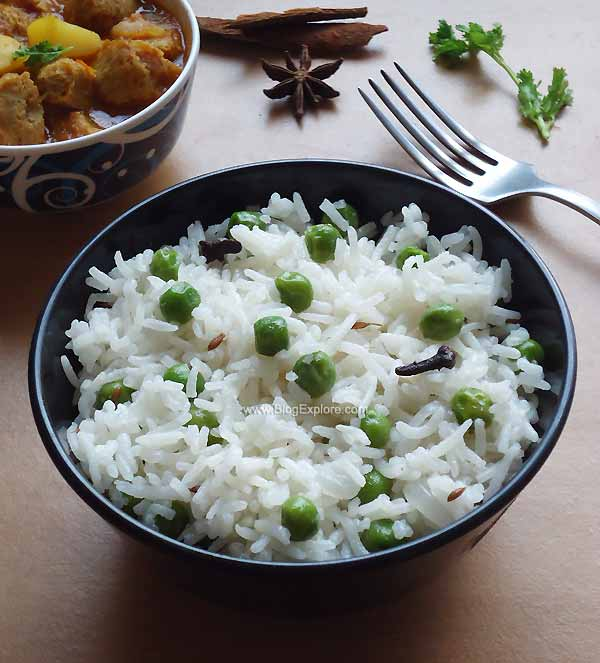

Peas pulao

Peas pulao recipe
Ingredients
- Cloves
- Bay leaf
- cardamom
- cinnamon
- star anise
- Onion
- Green chilli
- Ginger garlic paste
- Salt
- Peas
- Basmathi rice
- Coconut milk
Method to cook
- Take a pressure pan and ghee.Heat it up.
- Add the whole spices.
- Add the green chillies,onion,ginger garlic paste and salt.Fry it for 2 Minutes.
- Add peas and cook it for 5 minutes.
- Add basmathi rice.Stir it up.
- Pour the diluted coconut milk.Add salt if required.
- Keep the flame in high and wait for 4 whistles.
- Peas pulao is ready!
Back to Home
other recipes